Apresentação
Bem-vindos ao meu blog! Eu sou a Isadora Arantes e criei esse blog para falar sobre séries e filmes. Se você também gosta, é só me acompanhar por aqui. Aqui você vai encontrar detalhes, resenha e as minhas opiniões sobre tudo que eu assisto. Espero que vocês gostem!
Séries que já assisti:
- The Mentalist
- One Tree Hill
- Outer Banks
- The Rookie
- Chicago P.D.
- Law & Order
- My life with the Walter boys
- Alexa & Katie
- Os donos do jogo
- Ginny e Georgia
- Manifest
- The Good Doctor
- XO, Kitty
- Person of Interest
- Ransom Canyon
- Olympo
- Grey's Anatomy
- Amor da minha vida
- Motorheads
- Dr.House
The Mentalist
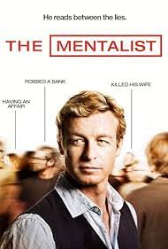
- The Mentalist acompanha a história de Patrick Jane, um ex-médium celebridade que assume publicamente ser uma farsa após uma tragédia pessoal devastadora: sua esposa e filha são assassinadas pelo cruel criminoso em série Red John, a quem Jane havia provocado na TV. Consumido pelo desejo de vingança, ele passa a atuar como consultor independente da CBI (Agência de Investigação da Califórnia), utilizando suas habilidades extraordinárias de observação, dedução, hipnose e leitura comportamental para desvendar os homicídios mais complexos do estado, enquanto caça secretamente o rastro de seu arqui-inimigo.
- A produção se destaca como um dos melhores dramas policiais da televisão graças ao carisma irresistível de Simon Baker e à genialidade dos roteiros, que transformam cada investigação em um verdadeiro jogo de xadrez psicológico. Diferente de outras séries de crimes comuns baseadas apenas em tecnologia forense, a narrativa foca no comportamento humano, trazendo um equilíbrio perfeito entre o humor excêntrico de Jane, a tensão eletrizante da busca por Red John e a química impecável do elenco principal. É uma obra fascinante e inteligente que consegue prender a atenção do espectador do primeiro ao último minuto, tornando impossível não se apaixonar pela jornada de superação e justiça do protagonista.
One Tree Hill
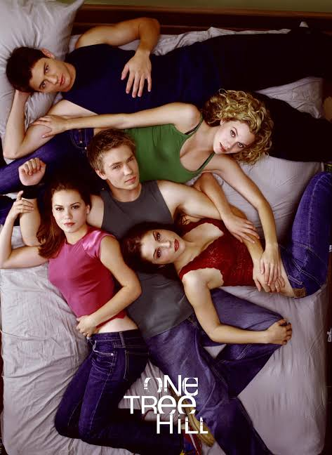
- One Tree Hill, conhecida aqui como Lances da Vida, é uma série que se passa na cidade de Tree Hill, na Carolina do Norte. A história gira em torno de dois meio-irmãos, Lucas e Nathan Scott. Eles têm o mesmo pai, o Dan Scott, mas tiveram criações totalmente diferentes. O Lucas foi criado pela mãe, a Karen, com a ajuda do tio Keith, de um jeito mais simples. Já o Nathan foi criado pelo Dan, sempre com muita pressão para ser o melhor no basquete. Quando o Lucas entra para o time do colégio, o Ravens, a rivalidade entre eles aumenta muito, e no meio disso tudo ainda tem os envolvimentos com as amigas Peyton, Brooke e Haley.
- One Tree Hill é uma série leve no começo, que fala bastante sobre drama adolescente, basquete, amizade e relacionamentos. Os personagens que mais aparecem são o Nathan, o Lucas, a Brooke, a Peyton e a Haley, e é muito interessante acompanhar a evolução de cada um ao longo das temporadas. O Nathan amadurece bastante, o Lucas vai encontrando seu caminho, a Brooke se torna muito mais madura e independente, e a Peyton e a Haley também passam por grandes mudanças. É uma série que começa de um jeito mais simples e vai se tornando mais profunda com o tempo.
Outer Banks
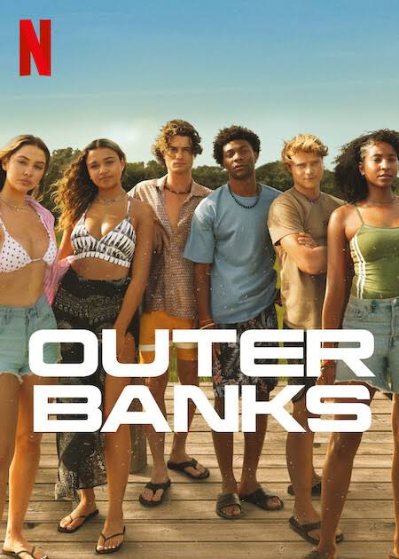
- Outer Banks conta a história de um grupo de amigos adolescentes que mora em Outer Banks, na Carolina do Norte. Eles são os Pogues - John B, Sarah, JJ, Kiara e Pope - e vivem em busca de um tesouro lendário que está ligado ao desaparecimento do pai do John B. No meio da caçada, eles se envolvem em muito mistério, brigas com os Kooks, que são os ricos da ilha, romances e perigos de verdade. A cada temporada a aventura vai ficando maior e eles vão descobrindo segredos sobre as famílias deles e sobre o próprio tesouro.
- Eu gosto muito de Outer Banks, é uma série muito viciante e de aventura. O que eu mais gosto é a amizade dos Pogues e o crescimento de cada um. O John B amadurece muito como líder, a Sarah vai ficando mais forte e independente, a Kiara e o Pope também evoluem muito e começam a tomar decisões mais maduras. E o JJ era o meu personagem favorito, ele trazia muito humor mas também tinha uma história muito triste e profunda, e a gente via ele crescendo muito. Na minha opinião até a quarta temporada era perfeita, depois da morte dele a série continua boa, ainda tem mistério e eu continuo assistindo, mas confesso que não curti terem matado ele, porque pra mim ele era a alma do grupo. Mesmo assim, continua sendo uma das minhas séries favoritas pra maratonar.
The Rookie
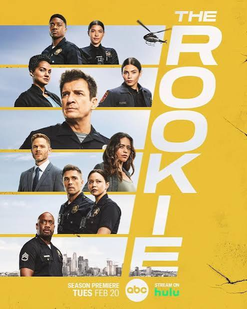
- The Rookie conta a história do John Nolan, um homem de 45 anos que decide recomeçar a vida do zero. Depois de se divorciar e ajudar a impedir um assalto a banco na cidade onde morava, ele resolve se mudar para Los Angeles para realizar o sonho de ser policial. Ele entra para a LAPD e se torna o recruta mais velho da turma, o que faz todo mundo duvidar dele. Na academia e nas ruas ele tem que provar todo dia que experiência de vida também conta muito, enquanto enfrenta casos perigosos, treinamentos pesados e a pressão de ser o novato mais velho.
- Eu gosto muito de The Rookie porque ela não é só policial, ela fala sobre segunda chance. O que eu mais gosto de acompanhar é o crescimento do Nolan e dos outros recrutas, como a Lucy Chen e o Tim Bradford. No começo eles são muito inseguros, erram bastante, mas com o tempo vão ficando mais confiantes, mais maduros e aprendem a trabalhar em equipe de verdade. A série mistura ação, comédia e drama na medida certa e é inspirada em uma história real, o que deixa tudo mais interessante. É ótima pra maratonar.
Chicago P.D.
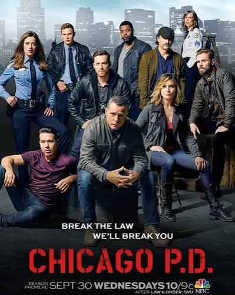
- Chicago P.D. - Distrito 21 é um spin-off de Chicago Fire e acompanha o dia a dia do 21º Distrito da polícia de Chicago. O distrito é dividido em dois grupos: os policiais fardados, que patrulham as ruas e cuidam dos crimes mais comuns, e a Unidade de Inteligência, que cuida dos casos mais pesados como tráfico, assassinatos e crime organizado. Quem comanda a Inteligência é o sargento Hank Voight, que faz de tudo pra fazer justiça, mesmo que precise quebrar as regras. Na equipe também estão o Antonio Dawson, o Jay Halstead, a Erin Lindsay, o Ruzek, a Burgess e o Atwater.
- O que eu mais gosto em Chicago P.D. é que não é só ação. A série mostra muito o crescimento de cada policial. O Voight mesmo, que no começo parece ser só durão e faz tudo do jeito dele, vai mostrando um lado muito mais humano e protetor com a equipe. O Ruzek e a Burgess amadurecem demais, tanto na carreira quanto na vida pessoal, e o Atwater e o Halstead também evoluem muito a cada temporada. É uma série que mostra que ser policial não é só prender bandido, é lidar com pressão, trauma e com as escolhas difíceis. É viciante e te prende do primeiro episódio.
Law & Order
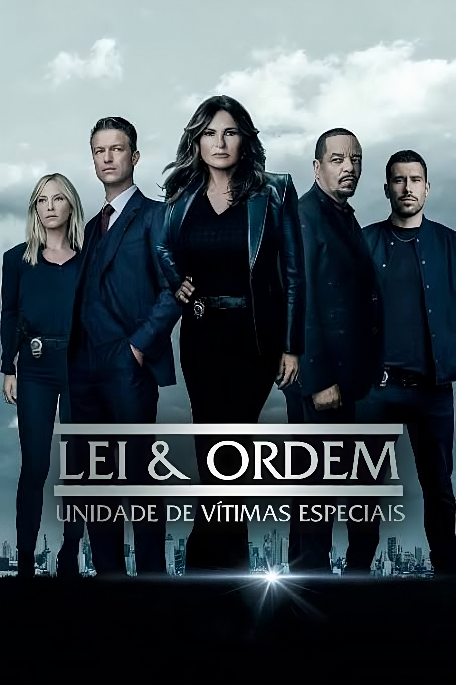
- Law & Order é uma série dramática policial criada por Dick Wolf, exibida originalmente em 1990. A proposta da série é apresentar as duas faces do sistema de justiça criminal americano. Na primeira parte do episódio, acompanhamos a investigação policial, com os detetives coletando evidências e interrogando suspeitos. Na segunda parte, a narrativa se desloca para o tribunal, onde os promotores trabalham para construir a acusação e garantir que a justiça seja feita. Cada episódio aborda um caso independente, inspirado em muitos momentos em acontecimentos reais.
- Considero Law & Order uma produção de grande qualidade e relevância dentro do gênero policial. Trata-se de uma série bem estruturada, com roteiros inteligentes e que proporciona uma reflexão sobre o sistema judiciário. Apesar de apresentar temáticas densas e, em alguns momentos, sensíveis, a obra se mantém envolvente e bem executada. É uma série que, na minha percepção, funciona melhor quando assistida com intervalos, por ser um conteúdo que exige mais atenção e reflexão, mas que certamente não perde seu valor por isso.
My life with the Walter boys
- Minha Vida com a Família Walter é uma série dramática e romântica da Netflix, baseada no livro de Ali Novak. A trama acompanha Jackie Howard, uma adolescente de 15 anos de Nova York que perde os pais em um trágico acidente e precisa recomeçar a vida no interior do Colorado. Ela passa a morar com sua tutora Katherine, melhor amiga de sua mãe, seu marido George e seus dez filhos no rancho da família Walter. Ao tentar se adaptar à nova rotina no campo e manter o foco nos estudos para realizar o sonho de entrar em Princeton, Jackie acaba se envolvendo em um intenso triângulo amoroso entre dois irmãos muito diferentes: Alex, o confiável e estudioso, e Cole, o problemático ex-atleta.
- Eu gosto muito de Minha Vida com a Família Walter. A Jackie já era muito madura no começo por tudo que passou, mas depois que começou a namorar o Cole ela acabou ficando mais infantil em algumas atitudes, o que eu acho que acontece pela pressão de tantas mudanças na vida dela ao mesmo tempo, e não por culpa dele, que inclusive evoluiu muito ao longo das 3 temporadas. Um ponto que me incomoda é a cobrança do tio George, que quer que ela seja perfeita o tempo todo, o que acaba fazendo ela contrariar ele. É uma série boa e viciante, mas não é todo mundo que vai gostar por ser um drama teen bem focado em romance.
Alexa & Katie
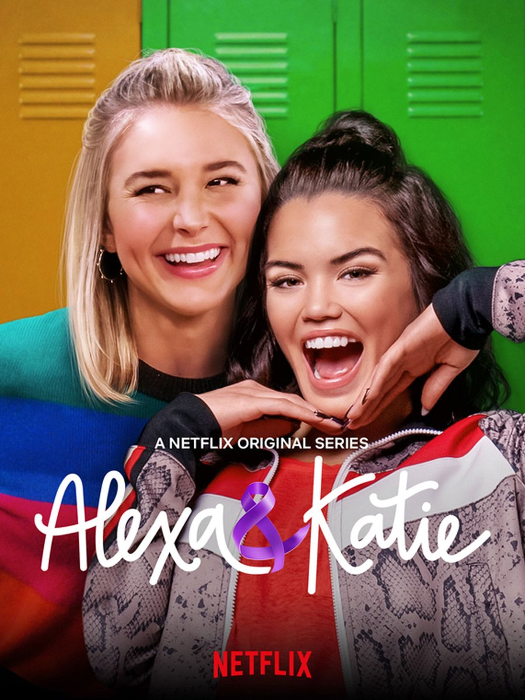
- Alexa e Katie é uma série original da Netflix que acompanha a história de duas melhores amigas inseparáveis que estão entrando no ensino médio. A vida das duas muda quando Alexa descobre que está com câncer e precisa iniciar o tratamento, enfrentando desafios como a queda de cabelo, o uso de peruca e as consultas médicas. A série retrata, de forma leve e sensível, como a amizade e a parceria entre elas se fortalecem diante dessa fase difícil.
- É uma série que eu acho muito fofa e que eu gosto muito, já assisti várias vezes, apesar de ter assistido faz muito tempo. Na minha opinião, é uma produção muito boa por retratar a amizade de forma tão verdadeira, mostrando toda a parceria e o apoio entre as duas. Entretanto, reconheço que não é uma série que todo mundo vai gostar, pois muitas pessoas podem não ter paciência ou podem achar a história ruim por ser mais leve e adolescente, mas particularmente eu gosto bastante e considero uma ótima série sobre amizade.
Os donos do jogo
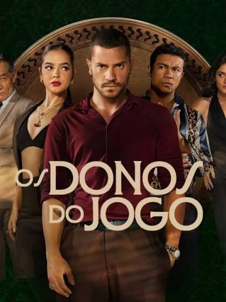
- Os Donos do Jogo é uma série brasileira de drama criminal original da Netflix, criada por Heitor Dhalia, Bernardo Barcellos e Bruno Passeri, lançada em 29 de outubro de 2025. A trama é ambientada no universo do jogo do bicho no Rio de Janeiro e acompanha a disputa de quatro famílias — Moraes, Guerra, Fernandez e Saad — pelo controle da contravenção. O foco principal é em Jefferson Moraes, o Profeta, vivido por André Lamoglia, um jovem ambicioso, filho de um bicheiro, que deseja subir na hierarquia do crime e conquistar poder. O elenco principal conta ainda com Mel Maia como Mirna Guerra, Giullia Buscacio como Suzana, Xamã como Búfalo, Juliana Paes, Chico Díaz e Otávio Müller.
- Na minha opinião, Os Donos do Jogo é uma série brasileira muito boa e super envolvente. Se você gosta de séries nesse estilo de máfia, crime e poder, e principalmente de produções nacionais, com certeza vai gostar muito. O elenco é excelente, com destaque para a participação da Mel Maia e do André Lamoglia, que é o ator que faz par com ela, são atores muito bons e com muita química em cena.Estou aguardando ansiosamente a segunda temporada, que já foi confirmada e está em gravação. Como crítica construtiva, acredito que o personagem Búfalo poderia ter tido mais tempo de tela na primeira temporada, pois ele é um personagem forte e tem um grande potencial para ser um totem da série, representando a força e a tradição dentro do jogo. Mesmo assim, a primeira temporada foi muito boa e vale muito a pena assistir.
Ginny & Georgia
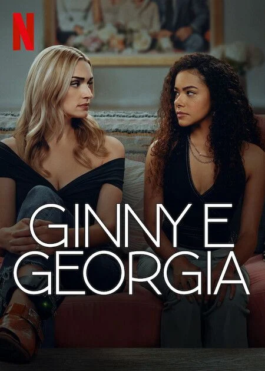
- Ginny & Georgia é uma série original da Netflix criada por Sarah Lampert, lançada em 2021. A trama acompanha Georgia Miller, uma mãe jovem, carismática e determinada, que teve sua primeira filha na adolescência e passou a vida fugindo de um passado conturbado para proteger seus filhos. Em busca de um recomeço, ela se muda com os filhos Ginny, de 15 anos, e Austin para a cidade de Wellsbury, Massachusetts. Enquanto Georgia tenta construir uma nova vida estável e se envolve com o prefeito Paul Randolph, Ginny tenta navegar pelos desafios da adolescência, amizades, relacionamentos e a descoberta de segredos obscuros sobre a mãe. Atualmente a série conta com 3 temporadas, todas disponíveis na Netflix.
- Para mim, Ginny & Georgia é uma série muito boa, muito foda mesmo, e eu assisto principalmente por causa da Georgia, que na minha opinião é quem sustenta a série inteira por ser uma personagem complexa, forte e que fez de tudo para sobreviver e proteger os filhos, mesmo que de maneiras questionáveis, já a Ginny eu acho uma personagem insuportável em muitos momentos, pois ela nega, nega e nega, não aceita a mãe que tem e acaba sendo muito ingrata mesmo sabendo de tudo que a Georgia já passou por ela, eu entendo que a Georgia também é difícil e que a relação das duas tem toda uma complexidade com muito drama envolvido, mas é difícil ter paciência com a Ginny em alguns episódios, e mesmo assim é uma série que vale muito a pena assistir, é preciso ter um pouco de paciência no começo porque o drama adolescente pesa bastante, mas a história da Georgia, seus segredos e sua força fazem tudo valer a pena e é uma das minhas favoritas.
Manifest
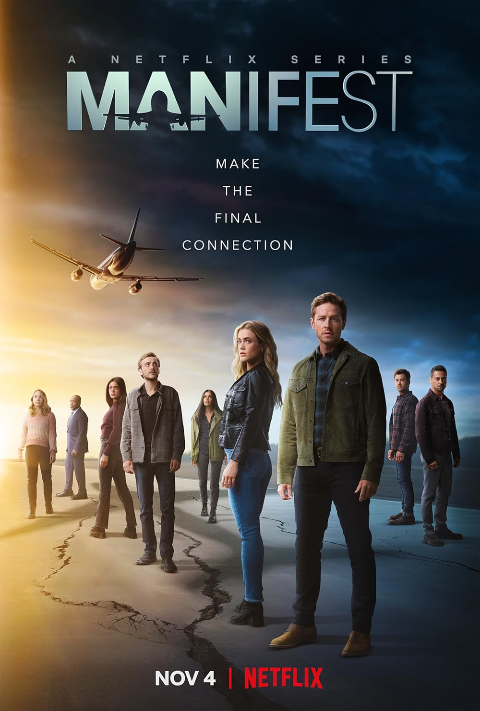
- Manifest é uma série de drama e mistério criada por Jeff Rake, lançada originalmente em 2018 pela NBC e depois resgatada pela Netflix, onde teve sua 4ª e última temporada. A trama acompanha os passageiros do voo 828 da Montego Air, que viajava da Jamaica para Nova York. Durante o percurso, o avião enfrenta uma forte turbulência, mas consegue pousar em segurança. Ao desembarcarem, os passageiros descobrem algo inacreditável: embora para eles tenham se passado apenas algumas horas, para o resto do mundo se passaram cinco anos e meio e todos haviam sido dados como mortos. A série acompanha os irmãos Ben e Michaela Stone enquanto tentam entender o que aconteceu e lidar com os chamados, visões misteriosas que começam a guiar os passageiros.
- Na minha opinião, Manifest é uma série boa e tem uma proposta de mistério muito interessante. Eu assisti, mas acabei pulando alguns episódios, porque em algumas partes eu achei meio chatinha, não me entreteve muito e não me prendeu. Acredito que tem gente que vai gostar bastante, pois o mistério é envolvente, mas para mim não é nada demais e não é aquela grande coisa. É uma série ok para quem gosta de suspense sobrenatural.
The Good Doctor
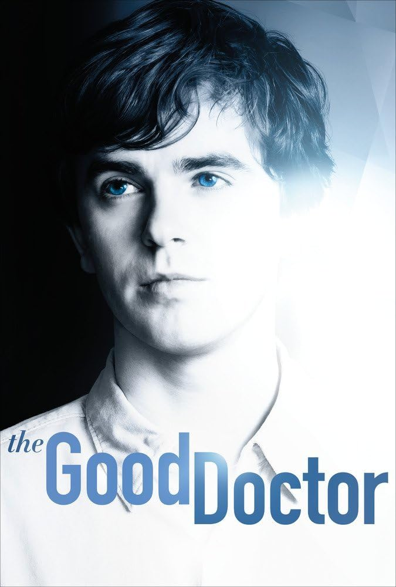
- The Good Doctor: O Bom Doutor é uma série norte-americana de drama médico, criada por David Shore e Daniel Dae Kim, exibida originalmente pelo canal ABC em 2017, sendo uma adaptação da produção sul-coreana homônima de 2013. A obra é estrelada por Freddie Highmore no papel de Shaun Murphy, um jovem cirurgião diagnosticado com Transtorno do Espectro Autista e Síndrome de Savant. Recém-formado, ele é recrutado para integrar a equipe cirúrgica do Hospital San Jose St. Bonaventure, um dos hospitais mais prestigiados do país. A narrativa acompanha sua trajetória profissional e pessoal, evidenciando não apenas seu notável conhecimento médico, mas também os desafios de inserção social e o enfrentamento do preconceito dentro do ambiente hospitalar.
- Em minha opinião, trata-se de uma série de excelente qualidade, que aborda temáticas relevantes com grande sensibilidade. A produção conduz de maneira extremamente respeitosa e bem desenvolvida a questão do protagonista ser autista e, ainda assim, exercer a medicina com excelência, destacando tanto suas limitações sociais quanto suas habilidades excepcionais. É uma obra inspiradora, que provoca reflexão sobre inclusão e capacidade. Apesar de apresentar alguns momentos com desenvolvimento narrativo um pouco mais lento, o que pode torná-la menos dinâmica em determinados episódios, no geral, é uma produção que recomendo e que certamente vale a pena ser assistida.
XO, Kitty
- XO, Kitty, no Brasil intitulada Com Carinho, Kitty, é uma série americana de comédia romântica criada por Jenny Han e Sascha Rothchild, lançada em 2023 pela Netflix. A produção é um spin-off da trilogia de filmes Para Todos os Garotos que Já Amei. A trama acompanha Kitty Song Covey, interpretada por Anna Cathcart, a irmã mais nova de Lara Jean, que sempre se considerou uma especialista em relacionamentos amorosos. Determinada a se reconectar com a história de sua mãe e a ficar mais perto de seu namorado à distância, Dae, ela consegue uma bolsa de estudos para estudar na KISS, uma escola de elite em Seul, na Coreia do Sul. Ao chegar lá, Kitty descobre que viver o amor na prática é muito mais complicado do que teorizar sobre ele, envolvendo novos romances, amizades e segredos de família. Atualmente a série conta com 3 temporadas, todas disponíveis na Netflix.
- Na minha opinião, XO, Kitty é uma série que eu gostei muito. É uma produção leve, divertida e muito fofa, ideal para quem gosta de romance adolescente. Apesar de gostar bastante da história e dos personagens, em alguns momentos a série proporciona aquela sensação de vergonha alheia, com situações um pouco constrangedoras e exageradas, o que é bem comum no gênero. No entanto, isso não tira o charme da obra, que continua sendo muito envolvente, cativante e vale muito a pena assistir.
Person of Interest
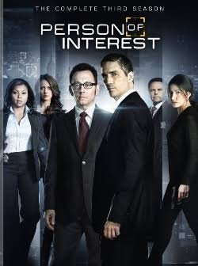
- Person of Interest é uma série americana de drama, ação e ficção científica criada por Jonathan Nolan e produzida por J.J. Abrams, exibida originalmente entre 2011 e 2016 pelo canal CBS, com 5 temporadas. No Brasil, foi exibida pela Warner Channel e SBT. A trama acompanha Harold Finch, interpretado por Michael Emerson, um bilionário gênio da computação e recluso, que desenvolveu para o governo dos Estados Unidos após os ataques de 11 de setembro um supercomputador chamado de A Máquina, capaz de analisar dados de vigilância e prever atos terroristas. Finch descobre que a Máquina também prevê crimes violentos comuns envolvendo pessoas comuns, casos considerados irrelevantes pelo governo e que são ignorados. Discordando disso, ele cria uma porta secreta no sistema que lhe fornece apenas o número do seguro social (CPF, na versão brasileira) da pessoa que estará envolvida em um crime, sem dizer se ela será vítima ou criminosa, nem quando ou onde. Incapaz de agir sozinho, Finch recruta John Reese, vivido por Jim Caviezel, um ex-agente da CIA dado como morto, para juntos impedirem esses crimes em Nova York.
- Person of Interest é uma série norte-americana de drama, ação e ficção científica criada por Jonathan Nolan e produzida por J.J. Abrams, exibida originalmente pela CBS entre 2011 e 2016 com 5 temporadas, e no Brasil pela Warner Channel e SBT, que acompanha Harold Finch, um bilionário gênio da computação que desenvolveu para o governo dos EUA uma inteligência artificial chamada A Máquina, capaz de prever atos terroristas através de dados de vigilância, mas que também identifica crimes violentos comuns considerados irrelevantes pelo governo, e discordando dessa omissão ele cria uma porta secreta que lhe informa apenas o número do seguro social da pessoa envolvida no crime iminente, recrutando então o ex-agente da CIA dado como morto John Reese para impedir esses crimes em Nova York. MINHA OPINIÃO Em minha opinião, é uma série que me agradou imensamente, por se tratar de uma obra extremamente inteligente, original e muito bem desenvolvida, que mistura com excelência ação, suspense investigativo e ficção científica, proporcionando uma reflexão profunda sobre vigilância e inteligência artificial e mantendo o espectador envolvido do início ao fim, sendo uma produção que vale muito a pena assistir e que recomendo fortemente.
Ransom Canyon
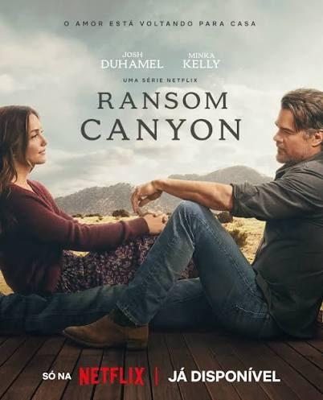
- Ransom Canyon é uma série americana de drama romântico e faroeste contemporâneo criada por April Blair e lançada em 17 de abril de 2025 pela Netflix, baseada na saga literária de Jodi Thomas. A produção, descrita pela própria plataforma como uma mistura entre Virgin River e Yellowstone, é ambientada na pequena cidade de Ransom Canyon, no Texas Hill Country. A trama acompanha o cotidiano de três dinastias de fazendeiros cujos destinos se entrelaçam em meio a disputas por terras, segredos familiares e desafios da vida rural. No centro da narrativa estão Staten Kirkland, interpretado por Josh Duhamel, um rancheiro firme e estoico que tenta manter o legado do Rancho Double K após uma grande perda familiar, e Quinn O'Grady, vivida por Minka Kelly, uma pianista que retorna à sua cidade natal após uma tentativa de carreira em Nova York para recomeçar. A série conta com 10 episódios em sua primeira temporada e já possui a segunda temporada confirmada pela Netflix.
- Na minha opinião, Ransom Canyon é uma série que eu amo. A proposta de unir o drama familiar do faroeste contemporâneo com o romance é muito envolvente, o cenário do Texas é deslumbrante e a história de amor central é muito cativante. No entanto, apesar de gostar muito da série, considero que falta desenvolvimento em muitos personagens, que acabam ficando um pouco superficiais e com tramas pouco aprofundadas. Ainda assim, é uma produção que vale muito a pena assistir e que me deixou ansiosa pela próxima temporada.
Olympo
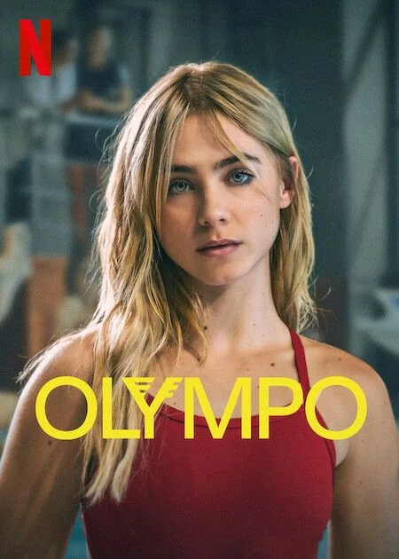
- Olympo é uma série espanhola de drama adolescente, esportivo e mistério, criada por Jan Matheu, Laia Foguet e Ibai Abad, lançada em 20 de junho de 2025 pela Netflix, contando com 1 temporada e 8 episódios. A trama é ambientada no Centro de Alto Rendimento dos Pirineus, o CAR Pirineus, uma escola de treinamento de elite fictícia que abriga os jovens atletas mais promissores da Espanha. A história acompanha Amaia Olaberria, interpretada por Clara Galle, capitã da seleção espanhola de nado artístico, uma atleta perfeccionista que exige o máximo de si mesma. Quando sua melhor amiga e colega de equipe, Núria Borges, vivida por María Romanillos, a supera pela primeira vez de forma surpreendente, Amaia começa a perceber que alguns atletas estão apresentando uma melhora de desempenho inexplicável e repentina. A série então explora os limites da ambição, a pressão por resultados e o dilema ético sobre até onde esses jovens estão dispostos a ir para conquistar patrocínios milionários da marca global Olympo, levantando suspeitas de doping e segredos obscuros dentro do centro de treinamento.
- Na minha opinião, Olympo é uma série que tinha muito potencial para continuar. É uma produção com uma proposta muito interessante, que mistura bem o drama esportivo com mistério e romance, e que aborda de forma relevante a pressão enfrentada por atletas de alto rendimento. Considero que os atores atuaram muito bem, com destaque para Clara Galle e todo o elenco jovem, que entregaram performances muito convincentes e envolventes. Apesar de ter sido cancelada pela Netflix após a primeira temporada, acredito que a série merecia uma continuação para desenvolver melhor suas tramas.
Grey's Anatomy
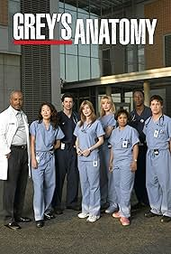
- Grey's Anatomy é uma série americana de drama médico criada por Shonda Rhimes, exibida originalmente nos Estados Unidos pela emissora ABC desde 27 de março de 2005, sendo um dos dramas médicos mais longos da história da televisão, contando atualmente com 21 temporadas e mais de 450 episódios. No Brasil, a série foi exibida pelo canal Sony Channel e atualmente está disponível no Star+ e na Netflix. A trama é ambientada no Seattle Grace Hospital, mais tarde renomeado como Grey Sloan Memorial Hospital, e acompanha a vida profissional e pessoal de cirurgiões e residentes, tendo como protagonista a Dra. Meredith Grey, interpretada por Ellen Pompeo, filha da renomada cirurgiã Ellis Grey. A série aborda casos médicos complexos, ao mesmo tempo em que explora relações amorosas, amizades, perdas e dilemas éticos dentro e fora do centro cirúrgico, com um elenco marcante que inclui personagens como Derek Shepherd, Cristina Yang, Alex Karev e Miranda Bailey.
- Na minha opinião, Grey's Anatomy é uma série muito pesada e emocionalmente desgastante, pois a sensação que tenho é de que alguém está sempre morrendo ou sofrendo alguma tragédia, o que torna a experiência de assistir bastante sofrida, mas ao mesmo tempo muito envolvente. Considero que a produção possui personagens muito bons, bem construídos, carismáticos e com grande evolução ao longo das temporadas, o que foi fundamental para que a série conseguisse se sustentar por tantos anos, mesmo com tantas perdas no elenco. Ainda assim, acredito que a obra conseguiu manter um ótimo nível de qualidade e conseguiu prender o público. No entanto, em meu ponto de vista, depois da 8ª temporada, que conta com o marcante acidente de avião envolvendo boa parte do elenco principal, sinto que a série desandou, perdeu parte de sua essência original e passou a apostar em dramas repetitivos e mortes excessivas, o que fez com que a qualidade caísse em comparação aos primeiros anos.
Amor da minha vida
- Amor da Minha Vida é uma série brasileira de comédia romântica original do Disney+, criada e escrita por Matheus Souza, com direção geral de René Sampaio, lançada em 22 de novembro de 2024 na plataforma, contando com 10 episódios em sua primeira temporada e classificação indicativa para maiores de 18 anos. A produção foi realizada pela Barry Company em parceria com a Intro Pictures e tornou-se a maior estreia de uma série nacional no Disney+ em 2024. A trama acompanha a amizade de longa data entre Bia Martins, interpretada por Bruna Marquezine, uma atriz em crise profissional que coleciona relacionamentos rápidos, superficiais e repletos de desilusões amorosas que a fazem desacreditar do amor, e Victor Ferreira, vivido por Sérgio Malheiros, seu melhor amigo que vive um relacionamento longo que entrou no piloto automático enquanto tenta salvar a loja de lustres de seu pai. Em meio aos encontros e desencontros da vida adulta, ao tentarem lidar com as expectativas da carreira, a independência e a pluralidade das relações contemporâneas, Bia acredita ter encontrado o amor da sua vida em Marcelo, vivido por Danilo Mesquita, enquanto Victor e Bia começam a perceber que o sentimento entre eles pode ir além da amizade, o que pode colocar em risco a relação que construíram. O elenco conta ainda com Sophia Abrahão, Rayssa Bratillieri, Malu Rodrigues, Fernanda Paes Leme e João Guilherme.
- Na minha opinião, Amor da Minha Vida é uma série ruim. Apesar de possuir uma proposta interessante ao retratar as desilusões reais e as dores e delícias da vida adulta, considero que a execução da história deixou muito a desejar. Achei o roteiro fraco, com diálogos pouco convincentes e personagens que não conseguem cativar o público de forma profunda, além de apresentar situações um pouco forçadas e repetitivas ao longo dos episódios. Mesmo contando com um elenco conhecido e carismático, como Bruna Marquezine e Sérgio Malheiros, e abordando temas relevantes sobre amor e amizade, na minha visão a série não conseguiu entregar uma narrativa envolvente e acabou se tornando cansativa, não correspondendo às expectativas criadas.
Motorheads
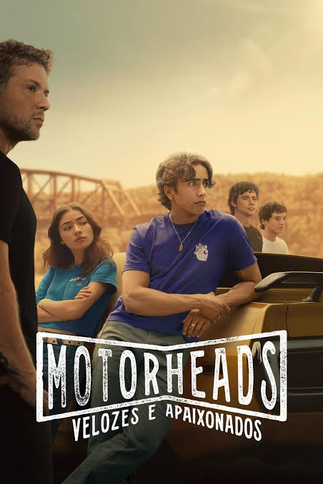
- Motorheads: Velozes e Apaixonados é uma série americana de drama adolescente, romance e ação, criada por John A. Norris, lançada em 20 de maio de 2025 pelo Prime Video, contando com 1 temporada e 10 episódios. No Brasil, a série foi lançada com o subtítulo Velozes e Apaixonados. A trama é ambientada em Ironwood, uma cidade fictícia do Cinturão da Ferrugem da Pensilvânia, nos Estados Unidos, uma região outrora próspera pela indústria que agora busca um vislumbre de esperança. A história acompanha os irmãos Zac e Caitlyn Torres, interpretados por Michael Cimino e Melissa Collazo, que se mudam com a mãe para a cidade natal da família para morar com o tio Logan Maddox, vivido por Ryan Phillippe, um ex-mecânico da NASCAR que hoje é dono de uma oficina. Na nova escola, os irmãos se envolvem com um grupo de jovens marginalizados que formam uma amizade improvável por causa do amor mútuo por carros e pelas corridas de rua clandestinas. A série explora o primeiro amor, a primeira desilusão amorosa e a sensação de girar a chave do primeiro carro, enquanto os personagens enfrentam a hierarquia do ensino médio, conflitos familiares, rivalidades perigosas e segredos sobre o desaparecimento do pai dos irmãos.
- Na minha opinião, gostei demais de Motorheads: Velozes e Apaixonados. Considero uma série muito envolvente, com uma proposta diferente ao misturar drama adolescente com adrenalina, romance e cultura de carros, além de apresentar personagens muito carismáticos e uma história cativante que prende do início ao fim. O que me deixou muito decepcionada foi que a série foi cancelada pelo Prime Video, mesmo tendo tanto potencial para continuar e desenvolver ainda mais as tramas e mistérios deixados em aberto. É uma pena que uma produção tão boa não tenha tido uma segunda temporada confirmada.
Dr.House
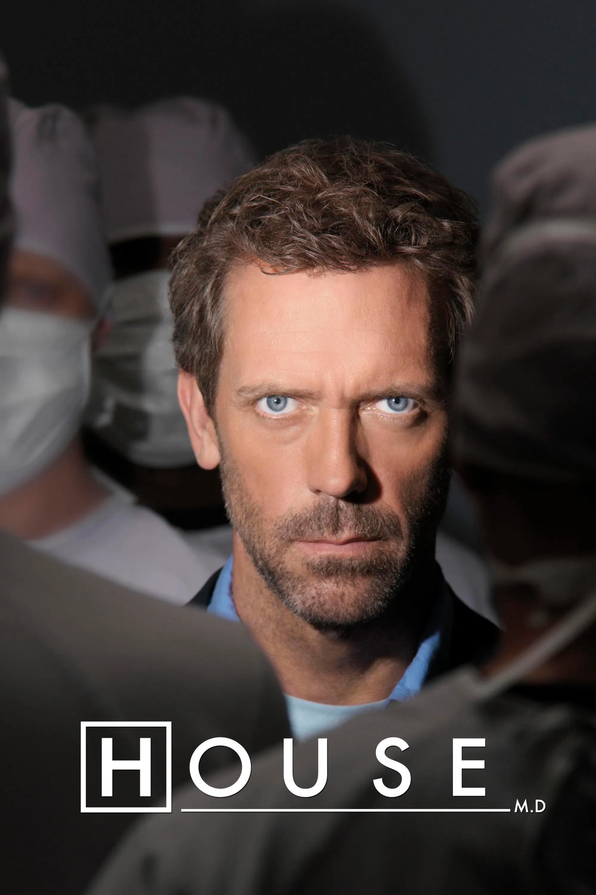
- Dr. House, no original House M.D., é uma série americana de drama médico criada por David Shore, exibida originalmente nos Estados Unidos pela emissora Fox entre 16 de novembro de 2004 e 21 de maio de 2012, contando com 8 temporadas e 177 episódios. No Brasil, a série foi exibida pela Record e pelo canal Universal Channel e atualmente está disponível no Prime Video e no Globoplay. A trama é ambientada no fictício Hospital Universitário Princeton-Plainsboro, em Nova Jersey, e acompanha o brilhante e anti-social Dr. Gregory House, interpretado por Hugh Laurie, um infectologista e nefrologista especializado em diagnóstico, famoso por sua genialidade, sarcasmo e por desrespeitar as regras do hospital. Chefiando uma equipe de diagnósticos composta por médicos como Eric Foreman, Allison Cameron e Robert Chase, House enfrenta os casos médicos mais complexos e misteriosos que nenhum outro médico conseguiu resolver, enquanto lida com sua dependência de analgésicos devido a uma dor crônica na perna, com sua amizade conturbada com o oncologista James Wilson e com os constantes conflitos com a diretora do hospital, Lisa Cuddy.
- Na minha opinião, Dr. House não é uma série ruim. Reconheço que é uma produção muito bem feita, com uma atuação excelente de Hugh Laurie, roteiros inteligentes e casos médicos muito interessantes e bem elaborados. No entanto, achei a série um pouco sem graça em alguns momentos, pois a estrutura dos episódios acaba se tornando repetitiva, sempre seguindo o mesmo padrão de diagnóstico e mistério médico, o que fez com que eu não conseguisse me prender tanto à história. Apesar disso, considero que é uma série que vale a pena assistir e que possui grande qualidade.